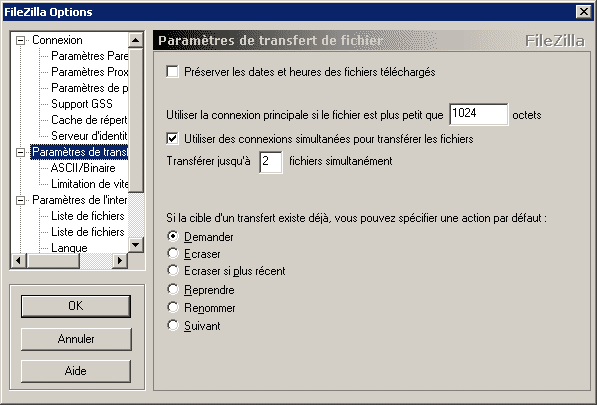

Configuration du transfert de fichiers
Vue d'ensemble:
Dans la section de configuration du transfert de fichiers et ses sous-sections, vous pouvez modifier le comportement de FileZilla au cours du transfert de fichiers.

Conserver date/heure des fichiers reçus du serveur
Par défaut, la date d'un nouveau fichier correspond à sa date de création. Activez cette fonction si FileZilla doit préserver l'horodatage d'un fichier reçu. Si cette case est cochée, le fichier reçu a la même date/heure que le fichier sur le serveur.
Utiliser des connexions simultanées pour transférer les fichiers
Cette fonction activée, FileZilla peut
transférer plusieurs fichiers en une seule fois et il est également
possible de parcourir les serveurs pendant le transfert des fichiers. Le champ
de texte en dessous précise le nombre de fichiers pouvant être
transférés en même temps.
Si Utiliser des connexions simultanées pour transférer les
fichiers est activé, FileZilla lance une nouvelle connexion pour
chaque transfert. Désactivez cette fonction si vous vous connectez fréquemment
aux serveurs qui ne permettent pas les connexions multiples et qui peuvent même
vous interdire d'essayer d'établir des connexions multiples.
Options fichiers existants
Vous pouvez sélectionner l'action de transfert par défaut vers la cible des fichiers qui existent déjà. Par défaut, FileZilla vous demande à chaque fois la permission de remplacer un fichier.
Options supplémentaires
La section Transfert de Fichiers présente plusieurs sous-sections dans lesquelles vous pouvez configurer d'autres options de transfert: